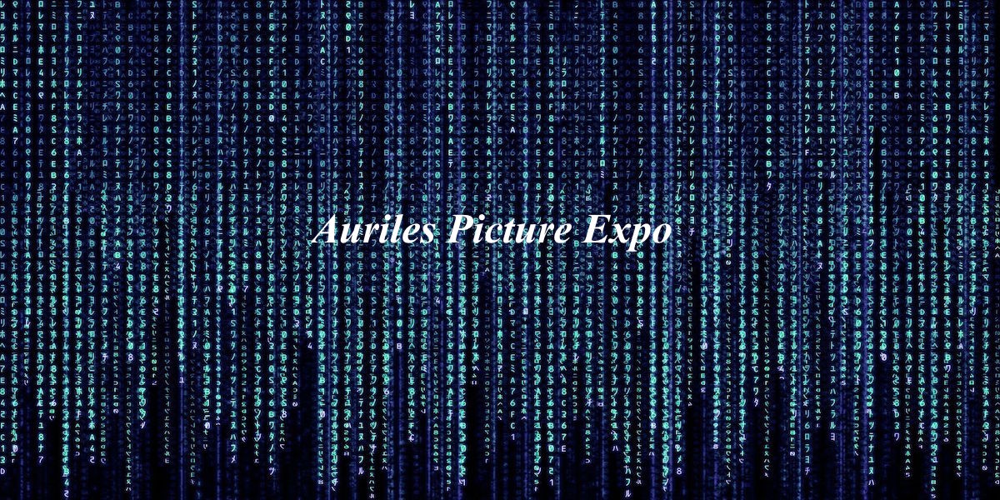

1) L'informatique à l'époque
- Que signifiait l'informatique pour l'époque ?
- Quelle en était l'utilité ?
- Comment l'évolution s'est elle mise en marche ?
2) La culture digitale de nos jours
- Quels sont les différents progrès de notre époque ?
- Une culture digitale devenue primordiale dans notre vie de tous les jours ?
- Comment compte-t-elle évoluer ?
3) En marche vers l'avenir
- Les objets connectés
- La réalité augmentée
4) Le code : une manière d'évoluer
- Le développement informatique
- une avancée certaine au vu de nombreuses technologies

5) Le hacking : une manière de se protéger
- sécuriser ses informations personnelles